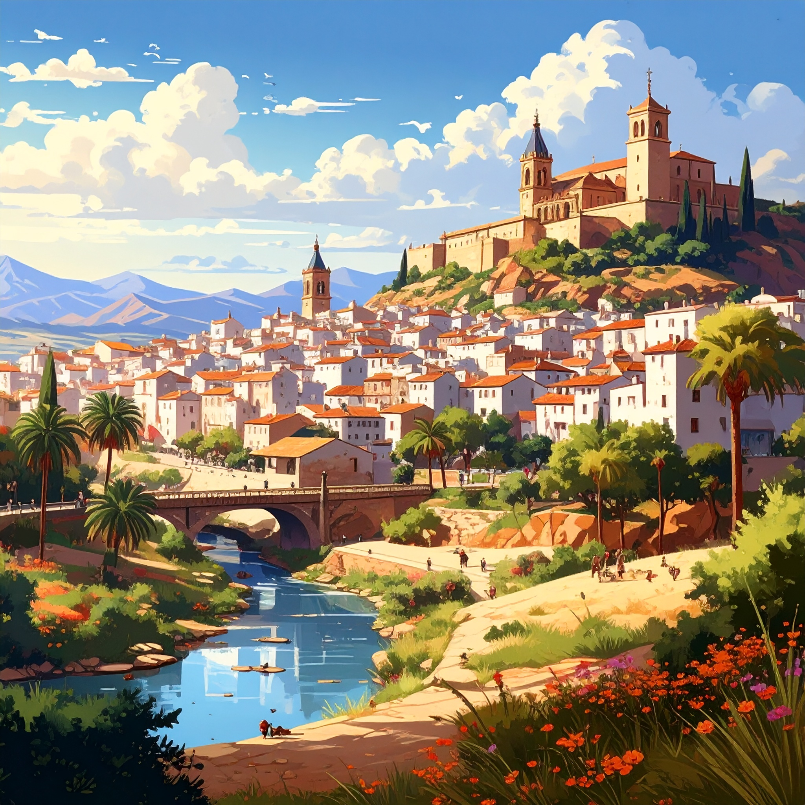

Alicante

Alcoy

La provincia de Alicante es un mosaico mediterráneo donde la luz, el mar y la tradición se entrelazan para crear un destino lleno de vida. Sus ciudades costeras, como Jávea, Altea o Santa Pola, brillan por sus aguas cristalinas y su gastronomía marinera, mientras que en el interior sorprenden paisajes de montaña, castillos y pueblos con encanto como Guadalest o Alcoy. Con un clima privilegiado, una cultura vibrante y una oferta turística que combina naturaleza, historia y modernidad, Alicante se convierte en un lugar único que invita a disfrutarla durante todo el año.